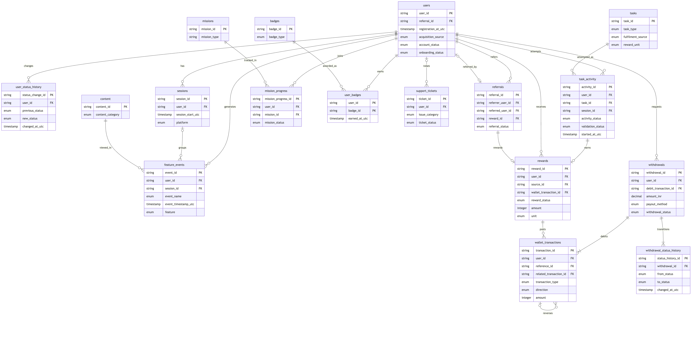

10 · Logical Data Model
Status: proposed specification. No event, field, table or KPI in this document has been verified as implemented in VELOOP production (see Assumption A-001). Facts taken from official VELOOP pages cite a source ID from the Source & Verification Register (deliverable 19).
The model has 17 entities. It covers the 8 required entities (Users, Tasks, Task Activity, Rewards, Wallet Transactions, Withdrawals, Referrals, Feature Events) plus status-history tables, sessions, missions, badges, support tickets and content. Each optional entity is justified below.
H4 ER diagram

Vector version: diagrams/er_diagram.svg.

The source is diagrams/er_diagram.mmd, and the Mermaid code below also renders on GitHub:
erDiagram
users {
string user_id PK
string referral_id FK
timestamp registration_at_utc
enum acquisition_source
enum account_status
enum onboarding_status
}
user_status_history {
string status_change_id PK
string user_id FK
enum previous_status
enum new_status
timestamp changed_at_utc
}
sessions {
string session_id PK
string user_id FK
timestamp session_start_utc
enum platform
}
feature_events {
string event_id PK
string user_id FK
string session_id FK
enum event_name
timestamp event_timestamp_utc
enum feature
}
tasks {
string task_id PK
enum task_type
enum fulfilment_source
enum reward_unit
}
task_activity {
string activity_id PK
string user_id FK
string task_id FK
string session_id FK
enum activity_status
enum validation_status
timestamp started_at_utc
}
rewards {
string reward_id PK
string user_id FK
string source_id FK
string wallet_transaction_id FK
enum reward_status
integer amount
enum unit
}
wallet_transactions {
string transaction_id PK
string user_id FK
string reference_id FK
string related_transaction_id FK
enum transaction_type
enum direction
integer amount
}
withdrawals {
string withdrawal_id PK
string user_id FK
string debit_transaction_id FK
decimal amount_inr
enum payout_method
enum withdrawal_status
}
withdrawal_status_history {
string status_history_id PK
string withdrawal_id FK
enum from_status
enum to_status
timestamp changed_at_utc
}
referrals {
string referral_id PK
string referrer_user_id FK
string referred_user_id FK
string reward_id FK
enum referral_status
}
missions {
string mission_id PK
string mission_type
}
mission_progress {
string mission_progress_id PK
string user_id FK
string mission_id FK
enum mission_status
}
badges {
string badge_id PK
enum badge_type
}
user_badges {
string user_id PK
string badge_id PK
timestamp earned_at_utc
}
support_tickets {
string ticket_id PK
string user_id FK
enum issue_category
enum ticket_status
}
content {
string content_id PK
enum content_category
}
users ||--o{ withdrawals : requests
withdrawals ||--|{ withdrawal_status_history : transitions
withdrawals ||--|{ wallet_transactions : debits
users ||--o{ sessions : has
users ||--o{ feature_events : generates
sessions |o--o{ feature_events : groups
users ||--o{ user_status_history : changes
users ||--o{ task_activity : attempts
tasks ||--o{ task_activity : attempted_as
task_activity ||--o| rewards : earns
users ||--o{ rewards : receives
rewards ||--o{ wallet_transactions : posts
wallet_transactions |o--o{ wallet_transactions : reverses
users ||--o{ referrals : refers
users |o--o| referrals : referred_by
referrals ||--o| rewards : rewards
users ||--o{ mission_progress : joins
missions ||--o{ mission_progress : tracked_in
users ||--o{ user_badges : earns
badges ||--o{ user_badges : awarded_as
users |o--o{ support_tickets : raises
content ||--o{ feature_events : viewed_in
H1/H2 Primary and foreign keys
| entity | description | primary_key | foreign_keys | grain | justification |
|---|---|---|---|---|---|
| users | One row per VELOOP account (pseudonymous analytics view). | user_id | referral_id → referrals.referral_id | account | Core entity; every other entity hangs off user_id. |
| user_status_history | One row per account status change. | status_change_id | user_id → users.user_id | status change | Needed because account_status is a snapshot (gap G04). |
| sessions | One row per session. | session_id | user_id → users.user_id | session | Session-level analysis and returning users. |
| feature_events | One row per tracked event (event envelope; properties in a JSON column). | event_id | user_id → users.user_id; session_id → sessions.session_id | event | Raw behavioural record. |
| tasks | One row per configured task/offer. | task_id | none | task config | Dimension for task activity. |
| task_activity | One row per user attempt at a task. | activity_id | user_id → users.user_id; task_id → tasks.task_id; session_id → sessions.session_id | attempt | Transaction-level task lifecycle (C1). |
| rewards | One row per reward decision. | reward_id | user_id → users.user_id; source_id → task_activity | feature_events | referrals | mission_progress.activity_id | event_id | referral_id | mission_progress_id; wallet_transaction_id → wallet_transactions.transaction_id | reward | Separates activity from credit (C3). |
| wallet_transactions | One row per ledger movement (append-only). | transaction_id | user_id → users.user_id; reference_id → rewards | withdrawals.reward_id | withdrawal_id; related_transaction_id → wallet_transactions.transaction_id | ledger movement | Wallet transaction model (D1). |
| withdrawals | One row per withdrawal request. | withdrawal_id | user_id → users.user_id; debit_transaction_id → wallet_transactions.transaction_id | request | Withdrawal lifecycle (D2). |
| withdrawal_status_history | One row per withdrawal status transition. | status_history_id | withdrawal_id → withdrawals.withdrawal_id | transition | Stage durations and impossible-transition checks. |
| referrals | One row per referral relationship. | referral_id | referrer_user_id → users.user_id; referred_user_id → users.user_id; reward_id → rewards.reward_id | referral | Referral funnel (E1). |
| missions | One row per configured mission. | mission_id | none | mission config | Justified: missions are live per official help center. |
| mission_progress | One row per user per mission attempt (users M:N missions). | mission_progress_id | user_id → users.user_id; mission_id → missions.mission_id | user-mission | Mission completion rate. |
| badges | One row per configured badge. | badge_id | none | badge config | Justified: badges are live per official help center. |
| user_badges | One row per badge earned by a user (users M:N badges). | user_id, badge_id | user_id → users.user_id; badge_id → badges.badge_id | user-badge | Badge engagement. |
| support_tickets | One row per support request. | ticket_id | user_id → users.user_id | ticket | Support KPIs. |
| content | One row per help-center article. | content_id | none | article | Help-center engagement. |
H3 Relationships
| parent | child | cardinality | via | note |
|---|---|---|---|---|
| users | sessions | 1:N | user_id | A user has many sessions; a session belongs to one user. |
| users | feature_events | 1:N | user_id | Event relationship: every event belongs to one user. |
| sessions | feature_events | 1:N | session_id | Event relationship: client events belong to one session. |
| users | user_status_history | 1:N | user_id | Each status change belongs to one user. |
| users | task_activity | 1:N | user_id | A user makes many attempts. |
| tasks | task_activity | 1:N | task_id | users M:N tasks resolved through task_activity. |
| task_activity | rewards | 1:0..1 | rewards.source_id = activity_id (source_type = task) | At most one reward per attempt (idempotency_key). |
| users | rewards | 1:N | user_id | A user has many rewards. |
| rewards | wallet_transactions | 1:0..N | wallet_transactions.reference_id = reward_id | Transaction relationship: credit, then optional reversal/adjustment. |
| wallet_transactions | wallet_transactions | 1:0..N | related_transaction_id | Transaction relationship: reversal, adjustment, refund and exchange pairs point to the original row. |
| users | wallet_transactions | 1:N | user_id | A wallet has many movements. |
| users | withdrawals | 1:N | user_id | A user can request many withdrawals. |
| withdrawals | wallet_transactions | 1:1..2 | debit_transaction_id; refund via reference_id | Exactly one redemption_debit; one refund if rejected/reversed. |
| withdrawals | withdrawal_status_history | 1:N | withdrawal_id | One row per transition. |
| users | referrals (as referrer) | 1:N | referrer_user_id | A user can refer many people. |
| users | referrals (as referred) | 1:0..1 | referred_user_id | A user is referred at most once. |
| referrals | rewards | 1:0..1 | referrals.reward_id | One referral reward on conversion. |
| users | mission_progress | 1:N | user_id | users M:N missions via mission_progress. |
| missions | mission_progress | 1:N | mission_id | |
| users | user_badges | 1:N | user_id | users M:N badges via user_badges. |
| badges | user_badges | 1:N | badge_id | |
| users | support_tickets | 1:N | user_id | Tickets may be anonymous (user_id optional). |
| content | feature_events | 1:N | properties.content_id | help_article_viewed events reference content. |
Key design decisions
- Activity is separate from reward (
task_activity→rewards), so "activity occurred" can never be confused with "reward credited" (C3). - The wallet is an append-only ledger. A reversal is a new row pointing to the original (
related_transaction_id); nothing is updated in place. Balances are always the sum of the ledger. - Polymorphic source.
rewards.source_idpoints totask_activity,feature_events(daily, spin, badge),referralsormission_progress, selected bysource_type. The validator and QC-06 check each branch separately (J2 tests R13–R15). - Many-to-many: users↔tasks through
task_activity, users↔missions throughmission_progress, users↔badges throughuser_badges(composite key). - Status history tables exist because current-state columns cannot answer "when" questions (gaps G04).
- Referral rows exist before the referred user does, so
referred_user_idis nullable until registration. A user can be referred at most once.